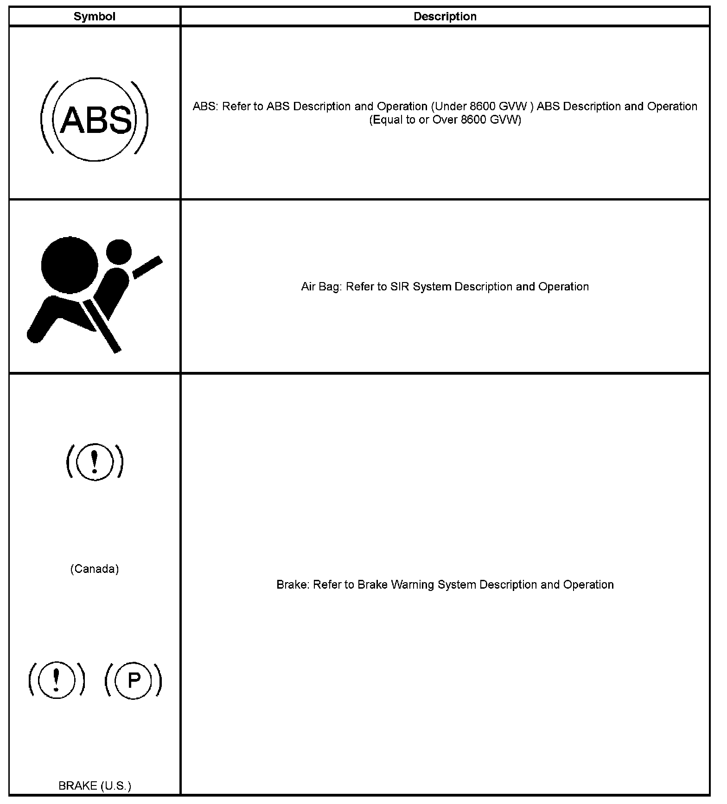
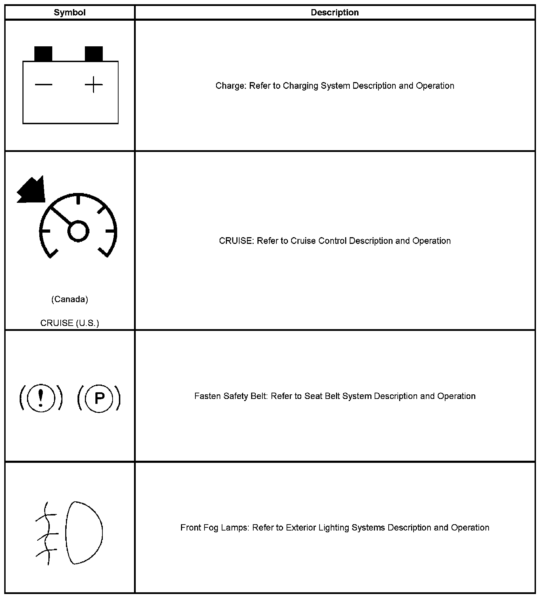
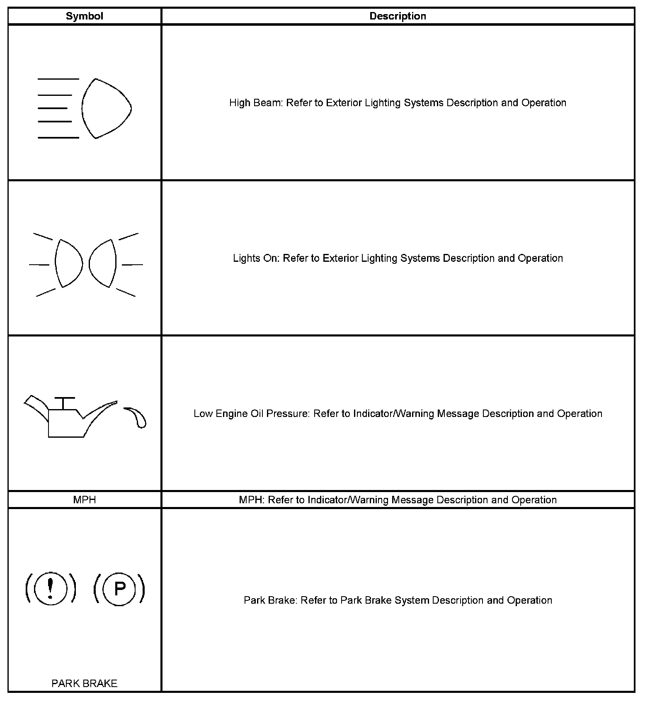
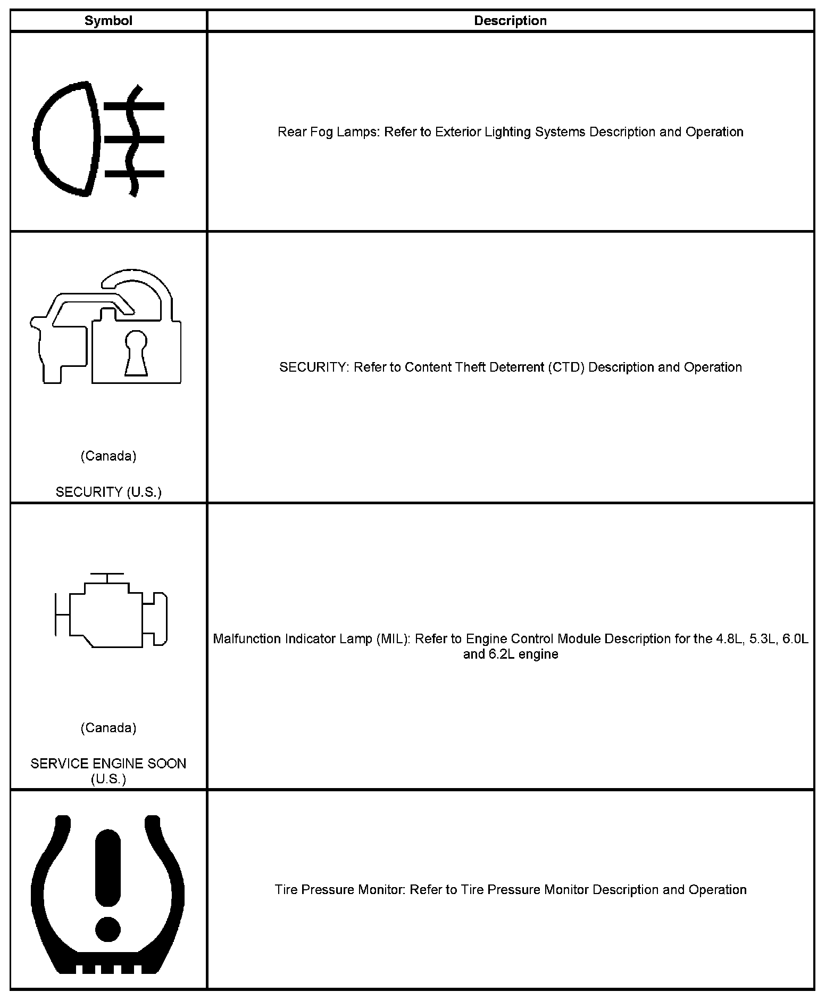
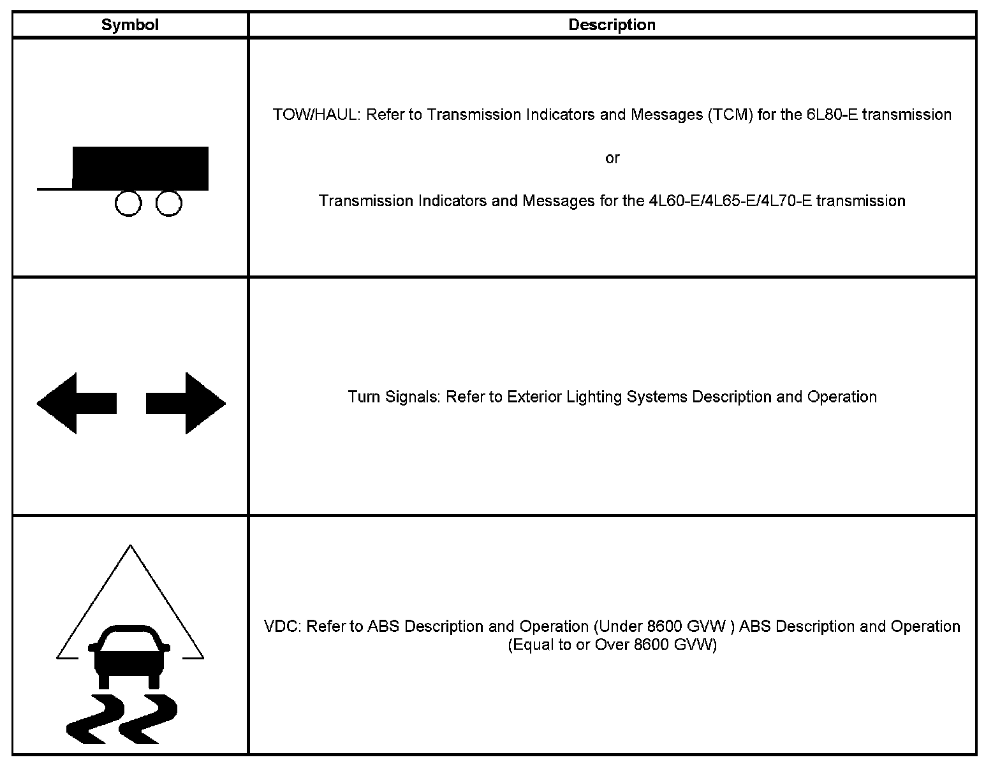
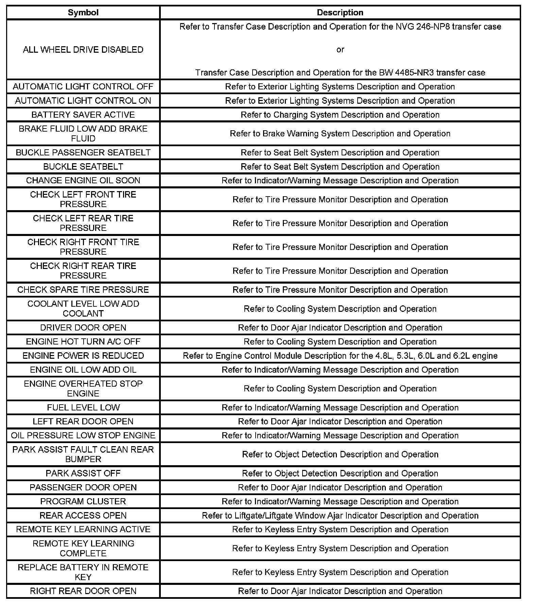
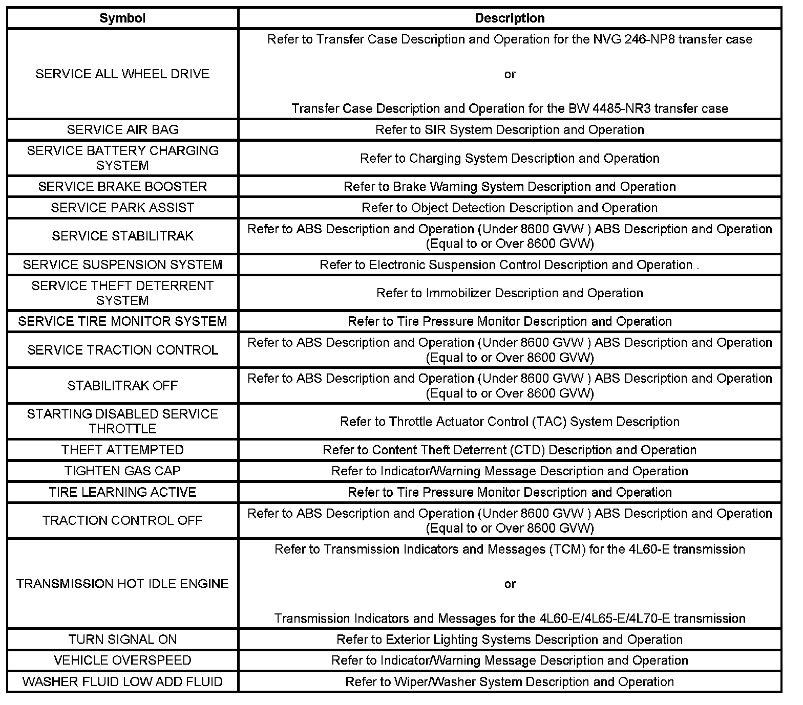

Indicator/Warning Message
INDICATOR/WARNING MESSAGE DESCRIPTION AND OPERATION





INDICATORS


DIC WARNING MESSAGES
CHANGE ENGINE OIL SOON
The instrument panel cluster (IPC) illuminates the CHANGE ENGINE OIL SOON message when the engine control module (ECM) determines that the engine oil should be changed. The IPC receives a class 2 message from the ECM requesting illumination. Once the oil is changed, perform the engine oil monitor reset procedure in order to clear the Change Engine Oil indicator. Refer to GM Oil Life System Resetting.
ENGINE OIL LOW
The instrument panel cluster (IPC) illuminates the ENGINE OIL LOW message in the driver information center (DIC) when the engine control module (ECM) detects a low engine oil level condition. The ECM only monitors the oil level switch signal circuit for a brief period between key on and ignition crank. The IPC receives a class 2 message from the ECM requesting illumination.
FUEL LEVEL LOW
The instrument panel cluster (IPC) illuminates the FUEL LEVEL LOW message in the driver information center (DIC) and the LOW FUEL indicator when the IPC detects that the fuel level is less than a pre-determined value. The IPC receives a class 2 message from the engine control module (ECM) indicating fuel level percent.
KM/H
The instrument panel cluster (IPC) displays the km/h indicator when the cluster detects that Metric units have been requested. MPH
The instrument panel cluster (IPC) displays the MPH indicator when the cluster detects that English units have been requested.
OIL PRESSURE LOW
The instrument panel cluster (IPC) illuminates the OIL PRESSURE LOW message in the driver information center (DIC) when the engine control module (ECM) detects a low oil pressure condition with the signal circuit low. The IPC receives a class 2 message from the ECM requesting illumination.
PROGRAM CLUSTER
The instrument panel cluster (IPC) illuminates the PROGRAM CLUSTER message in the driver information center (DIC) when the IPC needs to be programmed. Refer to Instrument Cluster Programming and Setup for setup and programming.
VEHICLE OVERSPEED
The instrument panel cluster (IPC) illuminates the VEHICLE OVERSPEED indicator when the IPC detects that the vehicle speed is more than 120 km/h (75 mph).
SHIFT INDICATOR
The instrument panel cluster (IPC) illuminates the shift indicator when the engine control module (ECM) determines that the vehicle should be shifted to the next higher gear. The IPC receives a class 2 message from the ECM requesting illumination.
TIGHTEN GAS CAP
The instrument panel cluster (IPC) illuminates the TIGHTEN GAS CAP message in the driver information center (DIC) when the engine control module (ECM) detects a low fuel pressure condition. The IPC receives a class 2 message from the ECM requesting illumination.